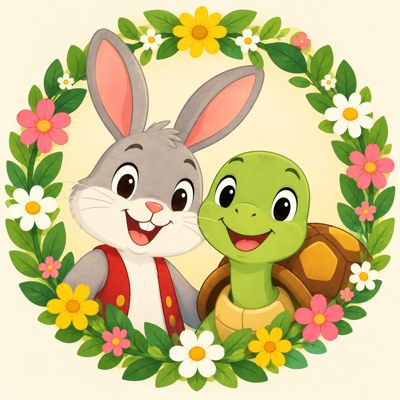
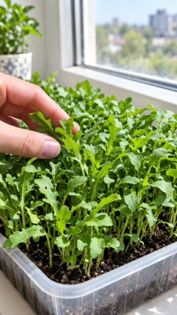

بستان الحكايا وازرعها
كل قنواتنا في مكان واحد — تابعنا على المنصة اللي تحبها.
بستان الحكايا

قصص أطفال وسيرة نبوية — حلقة جديدة كل يوم
ازرعها

زراعة منزلية بسيطة — من البذرة للحصاد
حلقة جديدة كل يوم على بستان الحكايا بإذن الله.